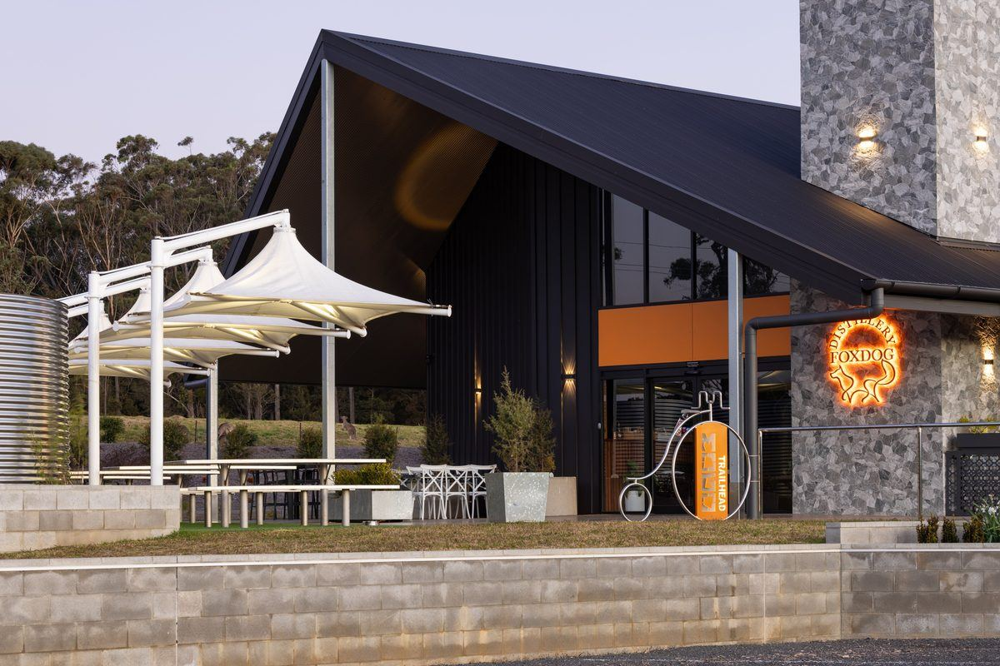
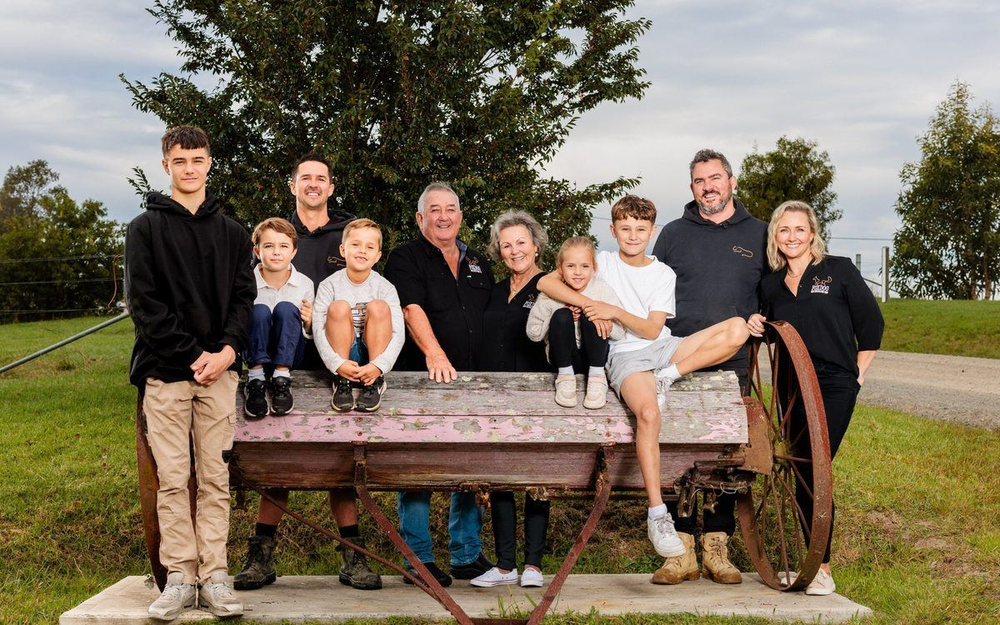
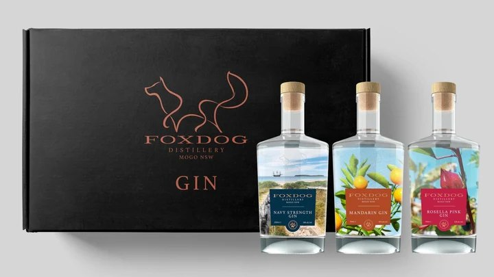

| ||||||||
 | ||||||||
THANKS FOR SIGNING UP Welcome, kindred spiritYou're on the Foxdog newsletter. We'll keep you posted on new releases, live music and what's on at the distillery, plus the odd story from the farm. SHOP THE RANGE | ||||||||
 | ||||||||
OUR STORY One family, three generationsFoxdog is named for a family legend: part fox, part dog, the guardian of Sunnyside Park. Our 180 acres at Mogo look out to Wandera Mountain and the Mogo State Forest, and Ben and Dean, carpenters by trade turned distillers, helped build it all. To us, local means legacy. Kate grows and hand-picks the rosella for our Rosella Pink Gin, and the samphire in our Samphire Gin is foraged from the Tomaga River at Sunnyside Park. | ||||||||
 | ||||||||
NEW HERE? START WITH THIS Three gins, one boxNot sure which Foxdog gin is yours? Our 3 x 200mL Gift Pack is Navy Strength plus two of Signature, Rosella, Samphire or Mandarin. Taste three, then pick your favourite. $99 BUY NOW | ||||||||
Take a piece of Foxdog homeEvery bottle comes beautifully packaged and ready to gift. | ||||||||
| ||||||||
Also in the range: Navy Strength Gin $99, and our Signature and Vanilla Vodka at $79. | ||||||||
COME AND SEE US A day at Sunnyside ParkOpen six days a week, Tuesday to Sunday. | ||||||||
| ||||||||
Sunnyside Farm, 312 Tomakin Road, Mogo NSW 2536 | 1800 369 364 Tue and Wed 11am to 3pm, Thu to Sat 11am to 8pm, Sun 11am to 4pm You're receiving this because you signed up to the Foxdog newsletter. Unsubscribe |